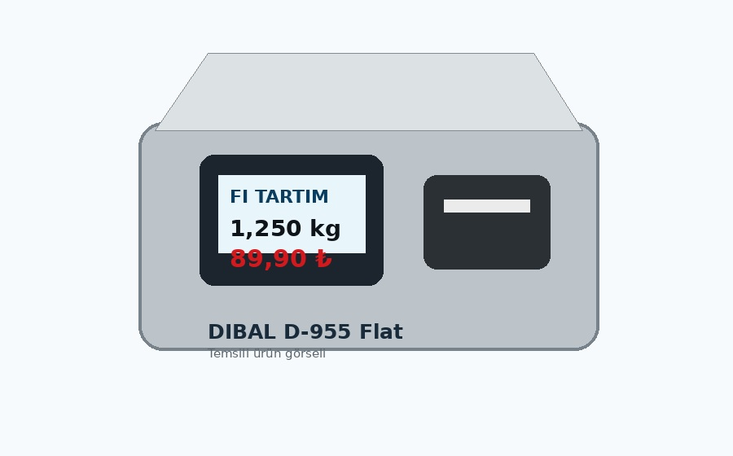

← Ürünlere dön
ELEKTRONİK TERAZİLER
Akıllı Tartım & Etiketleme
Market, manav, şarküteri ve taze gıda reyonları için profesyonel tartım, fiyatlandırma ve etiketleme çözümleri.

DIBAL D-955 Flat
Dokunmatik ekranlı elektronik terazi; etiketleme ve perakende tartım operasyonları için profesyonel çözüm.